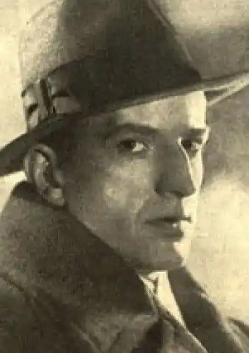

Александер Ольшаковський (29 липня 1902–17 січня 1977) – польський письменник фентезі, історичних романів та трилерів. Він також писав п'єси для різних театрів Польщі.
Закінчив філософський факультет Варшавського університету. У міжвоєнний період був редактором щомісячника "Naokoło Świat". Захоплювався спіритизмом і товаришував зі Стефаном Осовецьким. У 1930-х роках був журналістом католицької преси. Під час Другої світової війни воював як вояк Армії Крайової та варшавський повстанець. Після війни жив у Кракові, продовжував літературну діяльність.
Він був автором таких творів, як: Діамантове намисто Любовна ескапада Гнів Божий (Остання людина) Гробниця Беніхассен Дворецький пана графа Туманність Андромеди Поза межами життя і смерті Перехитрити рибу Кохання бандита Танго Острів ілюзій.